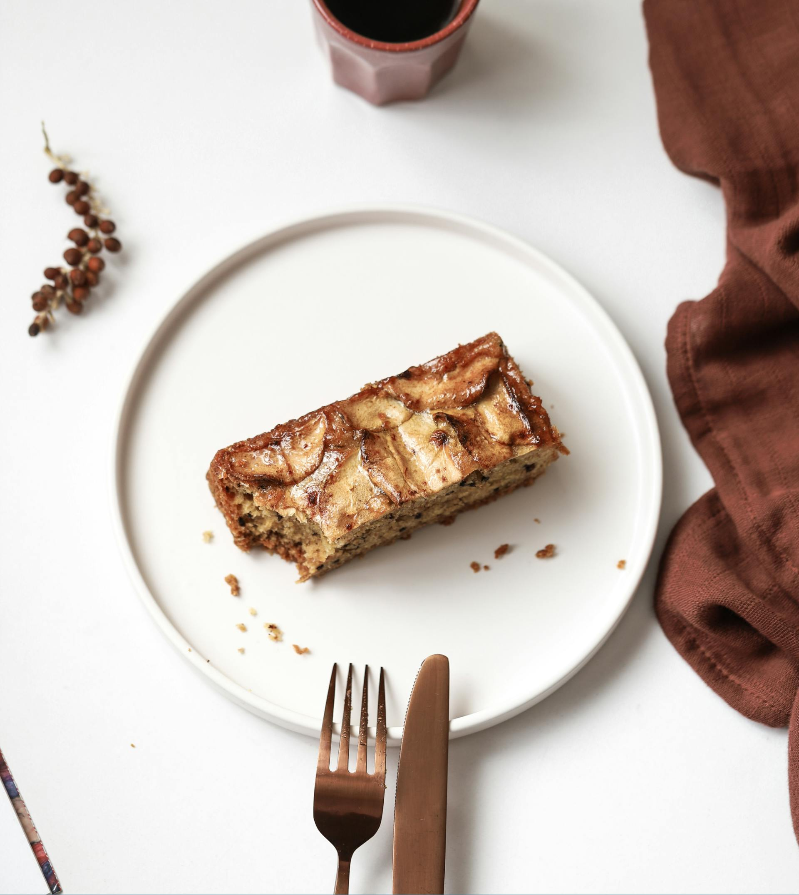

Apple Pie Monkey Bread
Home

Description
Enjoy the best of both worlds with this apple pie-inspired monkey bread. Each decadent bite is an experience of gooey, tender dough, warm cinnamon-sugar, and a luscious apple pie filling. Baked in a bundt pan, this impressive dish is a memorable addition to any breakfast or dessert spread
Ingredients
- 2 cans refrigerated biscuit dough
- 1/2 cup unsalted butter, melted
- 1 cup granulated sugar
- 2 teaspoons ground cinnamon
- 2 cups peeled, cored, and chopped apples
- 1/2 cup brown sugar
- 1 teaspoon ground nutmeg
- 1 teaspoon vanilla extract
Directions
- Preheat your oven to 350°F (175°C). Grease a bundt pan with butter or non-stick spray.
- In a small bowl, mix the granulated sugar and ground cinnamon. Set aside.
- Cut each biscuit into quarters. Dip each piece into the melted butter, then roll it in the cinnamon-sugar mixture. Set aside on a plate.
- In another bowl, combine the chopped apples, brown sugar, ground nutmeg, and vanilla extract. Mix well to coat the apples evenly.
- Layer the coated biscuit pieces and apple mixture in the greased bundt pan, starting and ending with the biscuit pieces. Make sure to distribute the apples evenly throughout.
- Bake in the preheated oven for 35-40 minutes, or until the top is golden brown and a toothpick inserted into the center comes out clean.
- Allow the monkey bread to cool in the pan for about 10 minutes before inverting it onto a serving plate.
- Serve warm and enjoy!